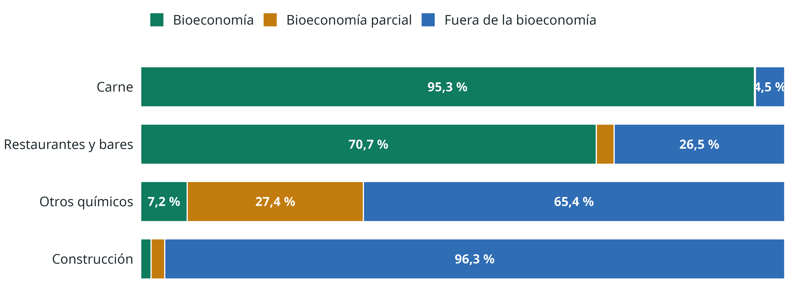
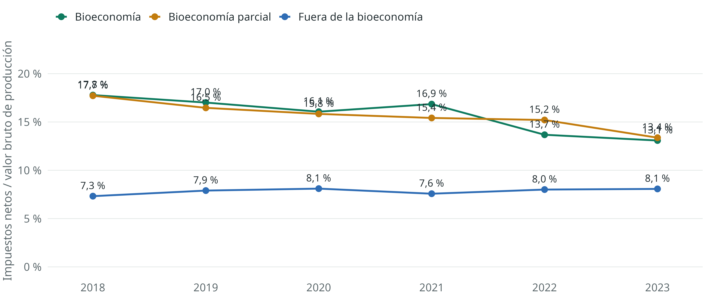
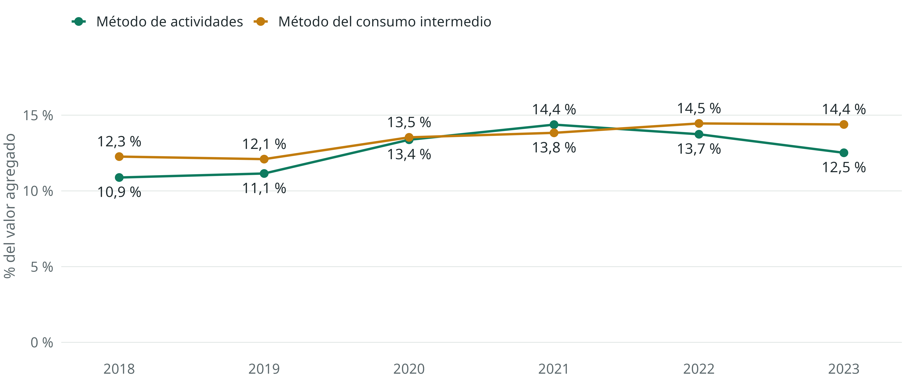
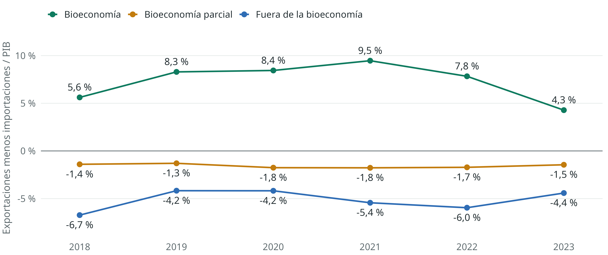

| Producción de | Producción | Importaciones | Ajuste CIF/FOB | Impuestos menos subvenciones | Márgenes de distribución | Total | ||
|---|---|---|---|---|---|---|---|---|
| A-B Sector primario |
C Manufacturas |
D-S Servicios |
||||||
| Productos agrícolas | 21.583 | 837 | 16 | 1.873 | 915 | 4.381 | 29.605 | |
| Productos mineros | 9.199 | 90 | 1.044 | -299 | 1.507 | 11.540 | ||
| Manufacturas | 91.784 | 570 | 18.002 | 14.339 | 37.780 | 162.476 | ||
| Servicios básicos | 2 | 2.388 | 237 | 36 | 2.663 | |||
| Construcción | 1.629 | 517 | 16.859 | 21 | 1.301 | 20.327 | ||
| Comercio | 1 | 2.219 | 38.871 | -6 | -38.499 | 2.586 | ||
| Otros servicios | 3.061 | 3.483 | 130.716 | 6.137 | -1.126 | 13.572 | -5.169 | 150.674 |
| Ajuste CIF/FOB | -1.126 | 1.126 | ||||||
| Compras directas | 333 | 333 | ||||||
| Oferta total | 35.475 | 98.930 | 189.420 | 26.520 | 29.859 | 380.204 | ||
La contabilidad nacional y la bioeconomía
Una mirada práctica al sistema de cuentas nacionales, con el caso de Argentina
Renato Vargas
Economista / Analista de datos
Andrés Mondaini
CEPAL
Adrián Rodríguez
CEPAL
Los productos bioeconómicos en la economía
16,8 % de la producción a precios básicos Promedio regional: 17,2 %
18,8 % de los insumos de todas las industrias Promedio regional: 18,6 %
8,9 % de las importaciones Promedio regional: 12,5 %
44,3 % de las exportaciones Promedio regional: 28,6 %
23,8 % de los impuestos netos sobre los productos Promedio regional: 24,5 %
24,3 % del consumo final Promedio regional: 24,9 %
6,2 % de la formación bruta de capital Promedio regional: 3,7 %
Argentina, 2023 Cifras grandes: elaboración propia con el COU de INDEC. Promedio de 13 países: Vargas et al. (2023).
Definiciones
¿De qué hablamos cuando hablamos de bioeconomía?
Definiciones de bioeconomía

“La producción, utilización, conservación y regeneración de recursos biológicos, incluyendo los conocimientos, la ciencia, la tecnología y la innovación relacionados con dichos recursos, para proporcionar información, productos, procesos y servicios a todos los sectores económicos, con el propósito de avanzar hacia una economía sostenible.”
Gobierno de Costa Rica, 2020; German Bioeconomy Council, 2018
Definiciones de bioeconomía


“La bioeconomía es la producción de bienes y servicios que se basa en el uso sostenible de los recursos biológicos y sus derivados obtenidos a partir de procesos productivos, para promover la creación de empleo y contribuir a la disminución de la pobreza.”
Libro Blanco de la Bioeconomía Sustentable de Ecuador
¿Qué debe entenderse por recursos biológicos?
Biomasa que se cultiva para producir alimentos, forrajes, fibras y energía.
Biomasa de los recursos marinos y acuicultura.
Biomasa forestal.
Biomasa residual en los sectores agropecuario, pesca y acuacultura, forestal y agroindustrial.
Biomasa que se puede recuperar de los desechos urbanos.
Desechos líquidos de la ganadería y de la actividad humana.
Biodiversidad terrestre y marina, incluyendo la biodiversidad de aguas continentales.
Cuentas nacionales y cuentas temáticas
Los cuadros de oferta y utilización son la espina dorsal del sistema.
Cuentas nacionales y cuentas temáticas
Sistema de Cuentas Nacionales
- Desempeño económico: producción, consumo y distribución del ingreso.
- El beneficio anual de las actividades económicas.
- Reglas contables, definiciones y clasificaciones estrictas.
Cuentas temáticas
- Extienden el alcance del Sistema de Cuentas Nacionales.
- Aíslan un tema en particular para revelar su valor.
- Usan información complementaria pero compatible (física, por ejemplo).
- En algunos casos, modifican definiciones.
Cuadro de oferta de Argentina, 2023
Miles de millones de pesos corrientes. Fuente: elaboración propia con datos de Instituto Nacional de Estadística y Censos (s.f.).
Cuadro de utilización de Argentina, 2023
| Consumo intermedio de | Consumo intermedio | Exportaciones | Consumo final | Formación bruta de capital | Total | ||
|---|---|---|---|---|---|---|---|
| A-B Sector primario |
C Manufacturas |
D-S Servicios |
|||||
| Productos agrícolas | 3.163 | 13.450 | 1.640 | 3.865 | 5.440 | 2.047 | 29.605 |
| Productos mineros | 187 | 5.756 | 2.797 | 2.408 | 374 | 19 | 11.540 |
| Manufacturas | 6.373 | 36.348 | 24.615 | 13.457 | 65.801 | 15.882 | 162.476 |
| Servicios básicos | 153 | 80 | 2.429 | 1 | 2.663 | ||
| Construcción | 35 | 3 | 1.406 | 12 | 18.871 | 20.327 | |
| Comercio | 907 | 875 | 804 | 2.586 | |||
| Otros servicios | 6.530 | 10.554 | 41.632 | 4.489 | 87.381 | 87 | 150.674 |
| Compras directas | 333 | 333 | |||||
| Utilización total | 17.348 | 67.067 | 75.323 | 24.565 | 158.995 | 36.905 | 380.204 |
Miles de millones de pesos corrientes. Fuente: elaboración propia con datos de Instituto Nacional de Estadística y Censos (s.f.).
Valor agregado y PIB por el método de la producción
| A-B Sector primario |
C Manufacturas |
D-S Servicios |
Total | |
|---|---|---|---|---|
| (+) Valor bruto de producción | 35.475 | 98.930 | 189.420 | 323.826 |
| (-) Consumo intermedio | 17.348 | 67.067 | 75.323 | 159.738 |
| (=) Valor agregado bruto | 18.127 | 31.864 | 114.097 | 164.087 |
| (+) Impuestos menos subvenciones sobre los productos | 29.859 | |||
| (=) Producto interno bruto a precios corrientes | 193.946 |
Miles de millones de pesos corrientes, Argentina, 2023. Los márgenes y el ajuste CIF/FOB no afectan el total.
Metodología y abordaje
Reordenar las clasificaciones sin tocar los saldos contables.
Abordaje de cuentas de sectores clave

Tres categorías, en la terminología del SCN 2025
El SCN 2025 llama cuentas temáticas a las antiguas cuentas satélite y las organiza alrededor de una actividad clave con una frontera precisa (Comisión Europea et al., 2025, párr. 38.2, 38.21 y 38.29).
| Método 2022 (CEPAL) | Categoría en esta cuenta | Concepto del SCN 2025 |
|---|---|---|
| BA01 / BP01. Característicos de la bioeconomía | Bioeconomía | Dentro de la frontera de la actividad clave |
| BA02 / BP02. Características extendidas | Bioeconomía parcial | Parcialmente dentro de la frontera: filas y columnas que la cruzan |
| BA03 / BP03. No característicos | Fuera de la bioeconomía | Fuera de la frontera |
El SCN 2025 pide desagregar las filas y columnas que cruzan la frontera (Comisión Europea et al., 2025, párr. 38.32). El COU de INDEC no tiene ese detalle, por eso la bioeconomía parcial queda como categoría propia.
Datos ordenados

“Una vez que has importado los datos, es una buena idea ordenarlos. […] Cuando tus datos están ordenados, cada columna es una variable y cada fila una observación. Tener datos ordenados es importante porque si su estructura es consistente, puedes enfocar tus esfuerzos en las preguntas sobre los datos.”
Wickham, Çetinkaya-Rundel y Grolemund, R para Ciencia de Datos (2.ª ed.)

Estado inicial

Paso 1: del cuadro al archivo plano

Paso 2: agregar la condición bioeconómica

Paso 3: volver a un cuadro, ahora con la bioeconomía visible

Lo que hicimos con el COU de Argentina
9.726 filas con valor en la base de 2023: una por cada celda distinta de cero
3 cuadros en una sola tabla: oferta, utilización y valor agregado
2018 a 2023 6 años en una sola base, con la misma rutina y clasificación
| Cuadro | Producto | Bio. producto | Actividad | Bio. actividad | Valor |
|---|---|---|---|---|---|
| Oferta | Animales vivos | Bioeconomía | Cría de animales | Bioeconomía | 6.827.789 |
| Oferta | Carne y productos de carne | Bioeconomía | Producción, procesamiento y con... | Bioeconomía | 5.701.148 |
| Oferta | Cereales | Bioeconomía | Cultivos agrícolas | Bioeconomía | 5.181.579 |
| Oferta | Aceites y grasas animales y veg... | Bioeconomía | Elaboración de aceites y grasas... | Bioeconomía | 4.197.647 |
| Oferta | Semillas y frutos oleaginosos | Bioeconomía | Cultivos agrícolas | Bioeconomía | 4.133.888 |
La rutina comprueba que la oferta sea igual a la utilización para cada producto, que cada fila sume el total de INDEC y reproduce los valores publicados de Argentina para 2018. Valores en millones de pesos. El script y la base están en la sección de descargas.
¿Para qué? Cuadros y gráficos a la medida
Una vez ordenada la base, el contenido de insumos de cualquier actividad sale con unos pocos filtros.

Composición del consumo intermedio de cuatro actividades, Argentina, 2023.
Resultados
La oferta y la utilización de Argentina, con la lente de la bioeconomía.
Cuadro de oferta bioeconómica de Argentina, 2023
| Bioeconomía | Bioeconomía parcial | Fuera de la bioeconomía | Importaciones | Ajuste CIF/FOB | Impuestos menos subvenciones | Márgenes de distribución | Total | |||||
|---|---|---|---|---|---|---|---|---|---|---|---|---|
| Sector primario |
Manu- facturas |
Manu- facturas |
Servicios | Sector primario |
Manu- facturas |
Servicios | ||||||
| Bioeconomía | 21.872 | 31.317 | 313 | 15 | 666 | 22 | 87 | 2.434 | 7.103 | 17.876 | 81.705 | |
| Productos agrícolas | 20.917 | 804 | 33 | 666 | 16 | 1.873 | 915 | 4.381 | 29.605 | |||
| Manufacturas | 30.513 | 263 | 15 | 22 | 71 | 562 | 6.184 | 13.495 | 51.125 | |||
| Otros servicios | 955 | 18 | 3 | 976 | ||||||||
| Bioeconomía parcial | 215 | 12.409 | 800 | 5.439 | 4.247 | 2.523 | 8.215 | 33.846 | ||||
| Manufacturas | 215 | 12.389 | 5.439 | 4.183 | 2.519 | 8.214 | 32.960 | |||||
| Otros servicios | 19 | 800 | 64 | 3 | 886 | |||||||
| Fuera de la bioeconomía | 210 | 1.490 | 1.627 | 11.451 | 12.728 | 46.099 | 177.066 | 20.631 | -1.126 | 20.233 | -26.091 | 264.320 |
| Productos mineros | 21 | 9.199 | 69 | 1.044 | -299 | 1.507 | 11.540 | |||||
| Manufacturas | 208 | 701 | 2 | 42.035 | 483 | 13.257 | 5.636 | 16.070 | 78.392 | |||
| Servicios básicos | 2 | 2.388 | 237 | 36 | 2.663 | |||||||
| Construcción | 210 | 17 | 55 | 1.420 | 445 | 16.859 | 21 | 1.301 | 20.327 | |||
| Comercio | 525 | 193 | 106 | 1 | 1.501 | 38.765 | -6 | -38.499 | 2.586 | |||
| Otros servicios | 720 | 677 | 11.344 | 2.106 | 2.050 | 118.572 | 6.073 | -1.126 | 13.566 | -5.169 | 148.812 | |
| Ajuste CIF/FOB | -1.126 | 1.126 | ||||||||||
| Compras directas | 333 | 333 | ||||||||||
| Oferta total | 22.082 | 33.021 | 14.349 | 12.266 | 13.394 | 51.560 | 177.154 | 26.520 | 29.859 | 380.204 | ||
Miles de millones de pesos corrientes. Fuente: elaboración propia con datos de Instituto Nacional de Estadística y Censos (s.f.).
Cuadro de utilización bioeconómica de Argentina, 2023
| Bioeconomía | Bioeconomía parcial | Fuera de la bioeconomía | Exportaciones | Consumo final | Formación bruta de capital | Total | |||||
|---|---|---|---|---|---|---|---|---|---|---|---|
| Sector primario |
Manu- facturas |
Manu- facturas |
Servicios | Sector primario |
Manu- facturas |
Servicios | |||||
| Bioeconomía | 5.221 | 17.707 | 761 | 4.521 | 15 | 276 | 1.587 | 10.734 | 38.599 | 2.284 | 81.705 |
| Productos agrícolas | 3.163 | 13.160 | 257 | 1.431 | 33 | 208 | 3.865 | 5.440 | 2.047 | 29.605 | |
| Manufacturas | 1.099 | 4.544 | 502 | 3.090 | 7 | 243 | 1.378 | 6.865 | 33.158 | 237 | 51.125 |
| Otros servicios | 959 | 3 | 2 | 7 | 5 | 976 | |||||
| Bioeconomía parcial | 2.378 | 664 | 2.978 | 257 | 186 | 2.915 | 3.197 | 1.433 | 15.731 | 4.104 | 33.846 |
| Manufacturas | 2.378 | 655 | 2.971 | 256 | 144 | 2.905 | 3.073 | 1.218 | 15.327 | 4.032 | 32.960 |
| Otros servicios | 9 | 8 | 1 | 42 | 10 | 124 | 215 | 404 | 72 | 886 | |
| Fuera de la bioeconomía | 3.606 | 4.988 | 5.055 | 2.443 | 5.943 | 31.720 | 63.317 | 12.064 | 104.665 | 30.517 | 264.320 |
| Productos mineros | 185 | 235 | 14 | 187 | 5.337 | 2.783 | 2.408 | 374 | 19 | 11.540 | |
| Manufacturas | 951 | 1.825 | 2.462 | 855 | 1.793 | 20.240 | 15.963 | 5.374 | 17.315 | 11.614 | 78.392 |
| Servicios básicos | 18 | 1 | 6 | 7 | 135 | 72 | 2.422 | 1 | 2.663 | ||
| Construcción | 9 | 45 | 26 | 3 | 1.361 | 12 | 18.871 | 20.327 | |||
| Comercio | 906 | 103 | 98 | 1 | 1 | 675 | 804 | 2.586 | |||
| Otros servicios | 1.721 | 2.875 | 2.254 | 1.522 | 3.800 | 5.394 | 39.985 | 4.269 | 86.977 | 14 | 148.812 |
| Compras directas | 333 | 333 | |||||||||
| Utilización total | 11.205 | 23.359 | 8.795 | 7.222 | 6.144 | 34.912 | 68.102 | 24.565 | 158.995 | 36.905 | 380.204 |
| Valor agregado bruto | 10.877 | 9.662 | 5.554 | 5.044 | 7.250 | 16.648 | 109.052 | 164.087 | |||
Miles de millones de pesos corrientes. Fuente: elaboración propia con datos de Instituto Nacional de Estadística y Censos (s.f.).
Cálculo del valor agregado
Dos formas de medir, con resultados distintos.
Valor agregado por el método de actividades económicas
| Actividades | Bioeconomía | Bioeconomía parcial | Fuera de la bioeconomía | Total |
|---|---|---|---|---|
| (+) Valor bruto de producción | 55.103 | 26.616 | 242.107 | 323.826 |
| (-) Consumo intermedio | 34.564 | 16.017 | 109.157 | 159.738 |
| (=) Valor agregado bruto | 20.539 | 10.598 | 132.950 | 164.087 |
| Porcentaje | 12,5 % | 6,5 % | 81,0 % | 100,0 % |
Este es el cálculo tradicional: se decide de antemano qué actividades son bioeconómicas y se suma su valor agregado. Las actividades bioeconómicas aportan 12,5 % y las de bioeconomía parcial 6,5 %.
El problema de clasificar de antemano
| Bioeconomía | Bioeconomía parcial | Fuera de la bioeconomía | Exportaciones | Consumo final | Formación bruta de capital | Total | |||||
|---|---|---|---|---|---|---|---|---|---|---|---|
| Sector primario |
Manu- facturas |
Manu- facturas |
Servicios | Sector primario |
Manu- facturas |
Servicios | |||||
| Bioeconomía | 5.221 | 17.707 | 761 | 4.521 | 15 | 276 | 1.587 | 10.734 | 38.599 | 2.284 | 81.705 |
| Productos agrícolas | 3.163 | 13.160 | 257 | 1.431 | 33 | 208 | 3.865 | 5.440 | 2.047 | 29.605 | |
| Manufacturas | 1.099 | 4.544 | 502 | 3.090 | 7 | 243 | 1.378 | 6.865 | 33.158 | 237 | 51.125 |
| Otros servicios | 959 | 3 | 2 | 7 | 5 | 976 | |||||
| Bioeconomía parcial | 2.378 | 664 | 2.978 | 257 | 186 | 2.915 | 3.197 | 1.433 | 15.731 | 4.104 | 33.846 |
| Manufacturas | 2.378 | 655 | 2.971 | 256 | 144 | 2.905 | 3.073 | 1.218 | 15.327 | 4.032 | 32.960 |
| Otros servicios | 9 | 8 | 1 | 42 | 10 | 124 | 215 | 404 | 72 | 886 | |
| Fuera de la bioeconomía | 3.606 | 4.988 | 5.055 | 2.443 | 5.943 | 31.720 | 63.317 | 12.064 | 104.665 | 30.517 | 264.320 |
| Productos mineros | 185 | 235 | 14 | 187 | 5.337 | 2.783 | 2.408 | 374 | 19 | 11.540 | |
| Manufacturas | 951 | 1.825 | 2.462 | 855 | 1.793 | 20.240 | 15.963 | 5.374 | 17.315 | 11.614 | 78.392 |
| Servicios básicos | 18 | 1 | 6 | 7 | 135 | 72 | 2.422 | 1 | 2.663 | ||
| Construcción | 9 | 45 | 26 | 3 | 1.361 | 12 | 18.871 | 20.327 | |||
| Comercio | 906 | 103 | 98 | 1 | 1 | 675 | 804 | 2.586 | |||
| Otros servicios | 1.721 | 2.875 | 2.254 | 1.522 | 3.800 | 5.394 | 39.985 | 4.269 | 86.977 | 14 | 148.812 |
| Compras directas | 333 | 333 | |||||||||
| Utilización total | 11.205 | 23.359 | 8.795 | 7.222 | 6.144 | 34.912 | 68.102 | 24.565 | 158.995 | 36.905 | 380.204 |
| Valor agregado bruto | 10.877 | 9.662 | 5.554 | 5.044 | 7.250 | 16.648 | 109.052 | 164.087 | |||
Subestimación: insumos bioeconómicos que usan actividades fuera de la bioeconomía Sobreestimación: insumos fuera de la bioeconomía que usan actividades bioeconómicas
Valor agregado por el método del consumo intermedio
| A Agricultura |
B Minería |
C Manufacturas |
D - E Servicios básicos y agua |
F Construcción |
G Comercio |
H - S Otros servicios |
Total | |
|---|---|---|---|---|---|---|---|---|
| Consumo intermedio | 11.205 | 6.144 | 67.067 | 5.339 | 8.657 | 13.212 | 48.115 | 159.738 |
| de los cuales, insumos bioeconómicos | 5.221 | 15 | 18.744 | 1 | 139 | 688 | 5.280 | 30.088 |
| % bioeconómico en el consumo intermedio | 46,6 % | 0,2 % | 27,9 % | 0,0 % | 1,6 % | 5,2 % | 11,0 % | 18,8 % |
| Valor agregado bruto | 10.877 | 7.250 | 31.864 | 2.765 | 7.640 | 32.704 | 70.987 | 164.087 |
| VA bioeconómico vía consumo intermedio | 5.068 | 17 | 8.906 | 123 | 1.703 | 7.790 | 23.608 | |
| % del VA de la sección | 46,6 % | 0,2 % | 27,9 % | 0,0 % | 1,6 % | 5,2 % | 11,0 % | 14,4 % |
Cada sección aporta valor agregado en proporción a sus insumos bioeconómicos: 14,4 % del total. La condición bioeconómica se vuelve un gradiente (Vargas et al., 2023).
Multiplicadores de uso de insumos bioeconómicos
- Con el cuadro de oferta y utilización se aproxima un modelo de insumo-producto. Con él se estima cuántos insumos de bioeconomía y de bioeconomía parcial, en pesos, se usan directa e indirectamente por cada peso que una actividad hace llegar a la demanda final.
- Muestra la dependencia directa e indirecta de los productos bioeconómicos.
- Va más allá del sector primario.
- Después se agrupan las actividades según la desviación absoluta mediana (DAM).
Alcance. Es un ejercicio didáctico: usa tecnología de la industria, valores a precios de comprador y uso total, sin separar insumos nacionales de importados. Compara actividades mejor de lo que mide niveles.
Desviación absoluta mediana (DAM)
Mide qué tan dispersos están los valores en torno a la mediana. No se ve afectada por valores extremos, a diferencia de la desviación estándar.
+1 DAM Sobre la mediana. Por encima del valor central, pero todavía cerca de él.
+2 DAM Alta. Claramente superiores al valor típico.
+3 DAM Muy alta. Valores atípicos positivos, con un uso muy superior de insumos bioeconómicos.
En Argentina, 2023, la mediana es 0,16 y la DAM es 0,08, en pesos de insumos por peso de demanda final.
Dependencia muy alta de insumos bioeconómicos (1)
| 1. Muy alta | 0,74 | |
| C | Producción, procesamiento y conservación de carne y productos cárnicos | 1,33 |
| C | Elaboración de alimentos preparados para animales | 1,23 |
| C | Elaboración de productos lácteos | 1,21 |
| C | Curtido y terminación de cueros | 1,10 |
| C | Elaboración de aceites y grasas de origen vegetal | 1,09 |
| H - S | Restaurantes, bares y cantinas | 0,91 |
| C | Elaboración de productos de molinería | 0,91 |
| C | Hilatura, tejedura y acabado de productos textiles | 0,89 |
| C | Elaboración de azúcar | 0,87 |
| C | Preparación de frutas, hortalizas y legumbres | 0,84 |
| C | Tostado, torrado y molienda de café | 0,82 |
| C | Elaboración de cacao y chocolate y de productos de confitería | 0,80 |
| C | Fabricación de plásticos en formas primarias y de caucho sintético | 0,79 |
| C | Elaboración de pescado y productos de pescado | 0,76 |
| C | Elaboración de pastas alimenticias frescas | 0,74 |
| C | Elaboración de productos de panadería | 0,73 |
Dependencia muy alta de insumos bioeconómicos (2)
| 1. Muy alta | 0,74 | |
| C | Fabricación de prendas de vestir, excepto prendas de piel | 0,70 |
| C | Fabricación de calzado de cuero, excepto el ortopédico | 0,69 |
| A | Cría de animales | 0,67 |
| C | Elaboración de cerveza, bebidas malteadas y de malta | 0,65 |
| C | Preparación de hojas de tabaco | 0,61 |
| A | Construcciones agropecuarias | 0,55 |
| C | Elaboración de soda y aguas | 0,54 |
| A | Cultivos agrícolas | 0,52 |
| C | Fabricación de productos de caucho | 0,52 |
| C | Elaboración de vinos | 0,51 |
| C | Fabricación de papel y de productos de papel | 0,50 |
| C | Aserrado y acepilladura de madera | 0,50 |
| C | Fabricación de otros productos químicos (excl Fabricación de plagui... | 0,48 |
| C | Fabricación de envases plásticos | 0,45 |
| C | Impresión | 0,44 |
| A | Silvicultura, extracción de madera y servicios conexos | 0,43 |
Dependencia alta y sobre la mediana
| 2. Alta | 0,36 | |
| C | Fabricación de abonos y compuestos de nitrógeno | 0,39 |
| C | Destilación, rectificación y mezcla de bebidas alcohólicas; producc... | 0,38 |
| C | Actividades de edición | 0,36 |
| C | Fabricación de muebles | 0,35 |
| C | Fabricación de gases comprimidos y licuados | 0,34 |
| 3. Sobre la mediana | 0,27 | |
| C | Fabricación de maquinaria de oficina, contabilidad e informática | 0,28 |
| C | Fabricación de tubos, válvulas y otros componentes electrónicos | 0,27 |
| H - S | SERVICIOS SOCIALES Y DE SALUD - Públicos | 0,27 |
Valor agregado por grupo de uso de insumos
| Grupo de uso de insumos | Actividades | Valor agregado bruto | Porcentaje |
|---|---|---|---|
| 1. Muy alta | 32 | 31.454 | 19,2 % |
| 2. Alta | 5 | 2.364 | 1,4 % |
| 3. Sobre la mediana | 3 | 2.652 | 1,6 % |
| 4. Mediana o abajo | 67 | 127.617 | 77,8 % |
| Total | 107 | 164.087 | 100,0 % |
Las actividades con uso de insumos bioeconómicos superior a la mediana más una DAM generan 22,2 % del valor agregado de Argentina.
Argentina, 2018 a 2023
La misma medida con 6 años de cuadros.
Participación por condición del producto

Precios corrientes. Las participaciones también reflejan precios relativos y tipo de cambio.
Tasa impositiva implícita

Impuestos menos subvenciones sobre los productos entre valor bruto de producción de los mismos productos.
Valor agregado bioeconómico según el método

Porcentaje del valor agregado bruto. Método de actividades: solo actividades bioeconómicas. Método del consumo intermedio: cada sección en proporción a sus insumos bioeconómicos.
Saldo comercial por condición del producto

Exportaciones menos importaciones de cada grupo de productos, como porcentaje del PIB a precios corrientes.
Composición de las exportaciones bioeconómicas

Participación en las exportaciones de productos bioeconómicos, precios corrientes. Los cinco productos son los que más exportan en 2023.
Resultados en el contexto latinoamericano
Trece países medidos con el mismo método (cifras alrededor de 2018).
Publicaciones disponibles
Haga clic en las imágenes:


Producción (año 2018, porcentajes)

Consumo intermedio (año 2018, porcentajes)

Importaciones (año 2018, porcentajes)

Exportaciones (año 2018, porcentajes)

Impuestos netos de subvenciones (año 2018, porcentajes)

Tasa impositiva implícita (año 2018, porcentajes)

Consumo final (año 2018, porcentajes)

Formación bruta de capital (año 2018, porcentajes)

Referencias
Comisión Europea, Fondo Monetario Internacional, Organización para la Cooperación y el Desarrollo Económico, Naciones Unidas y Banco Mundial. (2025). System of National Accounts 2025. Naciones Unidas. https://unstats.un.org/unsd/nationalaccount/SNAUpdate/2025/2025SNA_CH38_V11.pdf
Instituto Nacional de Estadística y Censos. (s.f.). Matrices de oferta y de utilización a precios de comprador (CIIU Rev. 3/CPC 1.1), 2018 a 2023. Archivos de Excel; INDEC.
Vargas, R., Mondaini, A. y Rodríguez, A. G. (2023). Cuentas satélite de bioeconomía para 13 países de América Latina y el Caribe: metodología y resultados (Serie Recursos Naturales y Desarrollo 219 (LC/TS.2023/138)). Comisión Económica para América Latina y el Caribe (CEPAL). https://www.cepal.org/es/publicaciones/68683-cuentas-satelite-bioeconomia-13-paises-america-latina-caribe-metodologia
Gracias
La contabilidad nacional y la bioeconomía